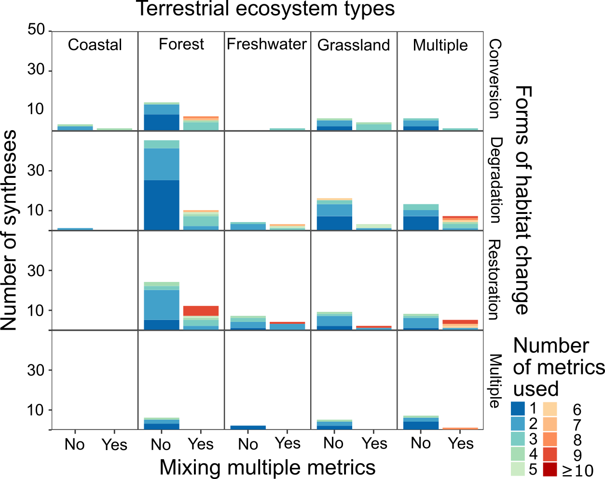
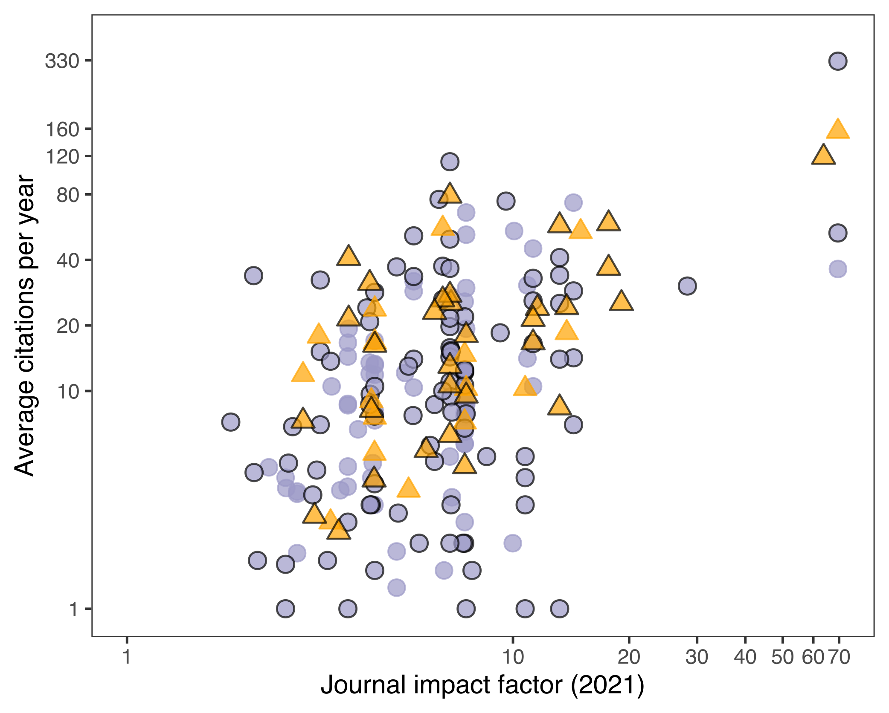
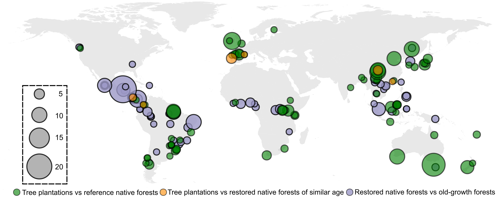
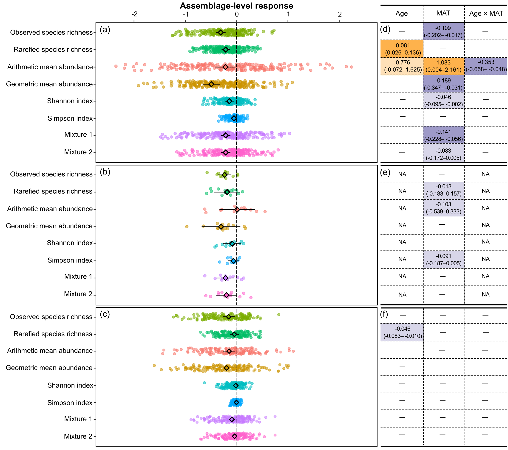

审视荟萃分析中混用生物多样性数量指标的现象及影响
This is a re-post from the original WeChat blog in Mandarin.
栖息地改变已经被识别为对生物多样性最大的威胁，掌握生物多样性对栖息地改变的响应规律是制定保护政策、开展保护工作和评估保护成效的重要基础 (IPBES 2019; WWF 2020)。致力于这一研究内容也将助力”昆明—蒙特利尔全球生物多样性框架”和”联合国生态修复十年”等全球性目标的有效达成——遏制进一步丧失，复元生物多样性。
生物多样性的内涵极其丰富，我们通常会利用一些数量指标来量化生物多样性的不同维度。最常用的指标包括物种丰富度 (richness)、物种多度 (abundance)、物种多样性 (diversity)、物种相似性 (similarity) 等。这些指标本质是不同的，只反映生物多样性的特定维度。因此，混用指标”——将不同指标混合使用——用于推断生物多样性对栖息地改变的响应并无生态学意义，甚至可能会逆转结论。
荟萃分析越来越多地用于研究生物多样性对栖息地改变的响应
世界范围内大量基于野外的实证研究调查了不同栖息地改变类型对生物多样性的影响。这些栖息地改变类型包括：转变 (conversion)、退化 (degradation)、恢复 (restoration)。得益于这些在世界各地针对不同生态系统、不同物种群落开展的野外调查，科学家能够通过对积累的数据进行荟萃分析 (meta-analysis)，推断生物多样性在更大空间尺度 (如热带区域或全球范围) 对栖息地变化响应的普遍规律以及影响其响应的驱动因素。
确保这类研究结果能够为保护政策的有效评估和适应性调整提供科学证据，其中一个非常重要的前提条件是客观且准确反映生物多样性的响应/变化。
审视”混用指标”的现象及影响
然而，“混用指标”这一现象在荟萃分析中不乏出现，甚至在一些重磅研究中也被使用 (Crouzeilles et al. 2017; Huang et al. 2019; Florencia Miguel et al. 2020)。但是截至目前，尚没有研究揭示”混用指标”的现象到底有多普遍——尤其是在推断生物多样性响应栖息地改变的荟萃分析中。另外一个更重要的问题是：“混用指标”会对量化生物多样性的响应带来什么样的影响？
我们通过系统性的文献搜索，根据研究主题——生物多样性对栖息地改变的响应——筛选出所有目标荟萃分析文献。对所有目标文献，提取以下信息：1) 研究的陆地生态系统类型 (包括海岸、森林、淡水、草地)；2) 栖息地改变的类型 (转变、退化、恢复)；3) 使用的生物多样性数量指标；4) 研究的空间尺度 (区域、全球)；5) 发表年份；6) 出版期刊及其影响因子；7) 文献的年均被引次数。
“混用指标”的现象普遍存在、影响不容小觑
通过整理分析以上信息，我们梳理出”混用指标”的荟萃分析文献在研究的栖息地改变类型、陆地生态系统、空间尺度的普遍程度。
在筛选出的193篇荟萃分析文献中包含了239个实证案例，“混用指标”出现在44篇文献 (22.7%) 中的61个案例 (25.6%) 中，基本上每5篇文献/案例就有1个”混用指标”并用于推断生物多样性对栖息地改变的响应。这一现象几乎出现在对所有陆地生态系统和栖息地改变类型 (图1) 的荟萃分析文献中，尤其在森林生态系统、退化和恢复等类型中更为明显。
在不同文献中，“混用指标”的数量也存在差异，从混用2个指标到甚至混用超过10个指标 (图1)。

我们试图通过荟萃分析文献所在出版期刊的影响因子和该文献的年均被引次数，反映”混用指标”的文献具有的影响力。我们发现”混用指标”的文献与不混用指标的文献所在出版期刊的影响因子和该文献的年均被引次数呈现相似分布 (图2)，不仅发表在影响因子较高的期刊，而且具有较多的年均被引次数，表明”混用指标”的文献也具有较大的影响力。

我们的研究揭示”混用指标”现象在现有研究生物多样性对栖息地改变响应的荟萃分析文献中普遍存在、其影响也不容小觑。
“混用指标”影响生物多样性变化的推断结果——以全球范围的森林恢复为例
为了回答”混用指标”对量化生物多样性变化的影响，我们选择森林恢复为代表性的栖息地变化类型，收集了不同森林恢复方式生物多样性成效的全球数据集——该数据集来自45个国家，包含了415个物种群落、33,064条物种水平多度数据 (图3)。其中，不同森林恢复方式的对比，包括：恢复人工林与基线原始林、恢复人工林与恢复天然林 (相近林龄)、恢复天然林与基线原始林。
这一全球数据集包含不同物种群落的物种水平多度，因此能够用于计算并对比一系列不同的生物多样性指标。通过对比各指标在不同森林恢复方式与基线森林的response ratio (RR) 来反映生物多样性的恢复成效。这些指标包括：丰富度指标 (observed species richness, rarified species richness)，多度指标 (arithmetic species abundance, geometric mean abundance)，多样性指标 (Shannon index, Simpson index)。

此外，我们还通过混合一定比例的不同指标来模拟”混用指标”现象，进一步探究对推断生物多样性变化的影响。第一个模拟指标 (mixture 1) 从备选的物种群落数据中按照1:1的比例随机将常用的5个指标 (observed species richness, rarified species richness, arithmetic species abundance, Shannon index, Simpson index) 进行混合。第二个模拟指标 (mixture 2) 按照1:1的比例随机将使用频次最高的3个指标 observed species richness, arithmetic species abundance, Shannon index) 进行混合。
“混用指标”对推断生物多样性变化造成的影响/偏差
在三组森林恢复方式的对比中，六个真实的指标 (observed species richness, rarified species richness, arithmetic species abundance, geometric mean abundance, Shannon index, Simpson index) 均反映出不同程度的生物多样性恢复 (图4 a, b, c)。其中，rarified species richness, Shannon index, Simpson index总是比其他指标反映出更积极的生物多样性恢复，且与基线森林的生物多样性水平没有明显差异 (即RR值与0有重叠)。与之相反，observed species richness和geometric mean abundance总是比其他指标反映出更保守的生物多样性恢复。

值得注意的是，两个模拟指标 (mixture 1, mixture 2) 的结果总是与其他指标具有不一样的数值，并介于各自来源指标的中间——该程度取决于它们的来源指标比例是更”积极” (如Shannon index) 还是更”保守” (如observed species richness) 地反映生物多样性的恢复。
上述结果表明，利用不同的指标推断生物多样性恢复的成效不仅会造成定量的数值差异，还可能会对推断生物多样性恢复的成效造成定性差异。
最后，我们的结果也表明，驱动生物多样性恢复的影响因素随着使用的指标不同也可能发生改变 (图4 d, e, f)。
不应该在推断生物多样性变化时”混用指标”
通过混合不同数量的不同指标得到的结果，对于推断生物多样性而言，没有生态学含义。例如：Crouzeilles et al. (2017) 混合了超过10个不同的指标得到的结果——“恢复天然林比恢复人工林能够恢复多34-56%的生物多样性”。我们该如何从生态学角度去解读呢？是物种丰富度增加了34-56%，还是物种多度增加了34-56%——恐怕我们都无法给出确信的回答。
针对”混用指标”的现象，我们的建议非常明确：不应该在推断生物多样性变化时混合使用数量指标。此外，一方面，我们还应该谨慎对待已经发表的”混用指标”的文献；另一方面，我们应该忠于指标本身的生态学含义，客观报告不同指标的结果。
忠于数量指标的生态学含义
解读不同生物多样性指标需要基于它们的生态学含义。丰富度指标反映的是现有物种的数量而不反映现有物种的多度。除非某一个物种完全消失或者刚刚出现，否则这类指标不会发生变化。与之类似，除非物种之间的相对多度发生变化，否则多样性指标也不会发生变化，因此，在使用或解读这两类指标时，应该留意它们对多度变化的不敏感性。
尽管多度指标都携带最基础的信息——即每个物种的个体数量——不同的多度指标仍然存在区别。Arithmetic species abundance (即常用的物种多度指标) 对不同物种赋予相同的权重，因此一个群落中优势物种的多度变化将更为明显的影响该多度指标的变化。而geometric mean abundance通过对不同物种赋予不同的权重避免了上述情况，在生态学角度更为准确地反映了一个群落的多度变化。“地球生命力报告 (Living Planet Report)”所用的Living Planet Index也是基于上述指标的生态学含义进行统计分析 (WWF 2020; Ledger et al. 2023)。
公开原始数据推动生物多样性研究
我们在收集生物多样性数据的过程中发现，许多野外实证研究并没有报告详细的调查设计和原始的物种群落调查结果 (即物种水平的多度)。为了推动荟萃分析方法的广泛运用，同时也为了对生物多样性的不同维度进行调查，我们呼吁科学家通过激励机制和意识转变推动原始数据的公开共享，使保护科学更深远的受益。
总结
荟萃分析研究生物多样性对栖息地改变的响应存在”混用指标”的现象。
“混用指标”不仅对推断生物多样性的变化造成定量影响，甚至会对推断结论带来定性影响。
生物多样性数量指标的生态学含义本质不同，不应该在推断生物多样性变化时混合使用。
公开生物多样性调查的详细设计并分享原始数据，使保护科学更深远受益。
参考文献
- Crouzeilles, R., Ferreira, M.S., Chazdon, R.L., Lindenmayer, D.B., Sansevero, J.B.B., Monteiro, L., Iribarrem, A., Latawiec, A.E. & Strassburg, B.B.N. (2017). Ecological restoration success is higher for natural regeneration than for active restoration in tropical forests. Science Advances, 3, e1701345.
- Florencia Miguel, M., Scott Butterfield, H. & Lortie, C.J. (2020). A meta-analysis contrasting active versus passive restoration practices in dryland agricultural ecosystems. PeerJ, 8, e10428.
- Huang, C., Zhou, Z., Peng, C., Teng, M. & Wang, P. (2019). How is biodiversity changing in response to ecological restoration in terrestrial ecosystems? A meta-analysis in China. Science of The Total Environment, 650, 1–9.
- IPBES. (2019). Summary for policymakers of the global assessment report on biodiversity and ecosystem services of the Intergovernmental Science-Policy Platform on Biodiversity and Ecosystem Services. S. Díaz, J. Settele, E. S. Brondízio E.S., H. T. Ngo, M. Guèze, J. Aga.
- Ledger, S.E.H., Loh, J., Almond, R., Böhm, M., Clements, C.F., Currie, J., Deinet, S., Galewski, T., Grooten, M., Jenkins, M., Marconi, V., Painter, B., Scott-Gatty, K., Young, L., Hoffmann, M., Freeman, R. & McRae, L. (2023). Past, present, and future of the Living Planet Index. npj biodivers, 2, 1–13.
- WWF. (2020). Living Planet Report 2020 - Bending the curve of biodiversity loss. Almond, R.E.A., Grooten M. and Petersen, T. (Eds). WWF, Gland, Switzerland.